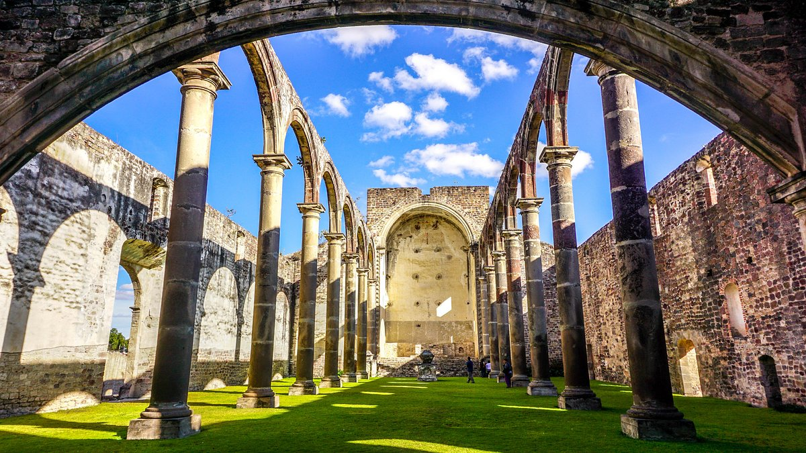

Foto: img/convento.jpg

Ex convento franciscano de Santiago Apóstol
Construido entre 1569 y 1580, es considerado una joya de la arquitectura renacentista en México.
- Dónde:
- En la plaza principal.
- Horario:
- Confirma en el Facebook del Gobierno Municipal de Tecali de Herrera.
- Dato curioso:
- Tecali era paso obligado en el camino de Veracruz a la Ciudad de México.